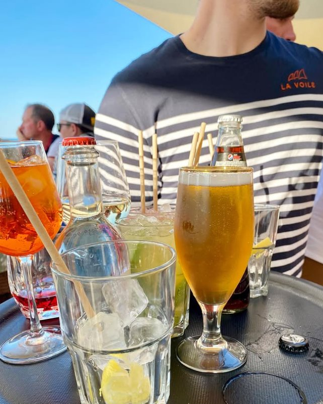
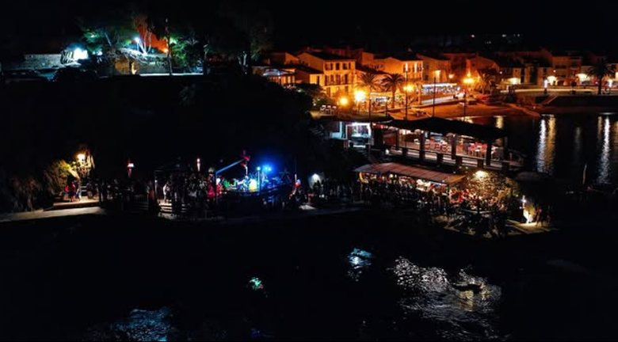

L'apéro a trouvé son balcon.
Cocktails, Banyuls bien frais et tapas de la mer, les pieds presque dans le sable. Du premier café du matin au dernier verre quand le ciel s'embrase.
Le balcon sur la mer de Collioure.
« Balco del Mar » — le balcon de la mer, en catalan. En contrebas du restaurant, c'est le repaire décontracté de La Voile : transats, musique, et ce sentiment de vacances permanent qui colle à la peau dès le premier verre.
On y passe pour un café-croissant au lever du jour, on y revient pour l'happy hour quand le soleil glisse derrière la baie. Ici, le temps ralentit et la fête monte doucement.

Trois ambiances, un seul balcon
Matin doux
Café, jus pressés et viennoiseries face au port qui s'éveille. Le petit-déjeuner les yeux sur l'eau.
Happy hour
Spritz, cocktails maison et tapas de la mer quand le soleil descend. L'heure dorée, littéralement.
Sunset session
DJ sets et concerts les pieds dans le sable. La nuit catalane démarre ici, le verre à la main.
À boire & à grignoter
Cocktails de soleil, vins de la Côte Vermeille et petites assiettes à partager.
« Le meilleur coucher de soleil de Collioure se déguste un verre à la main. »
El Balco del Mar
Rendez-vous au balcon, pour le couchant
Réservez votre transat ou votre table haute pour l'happy hour et les soirées concert.